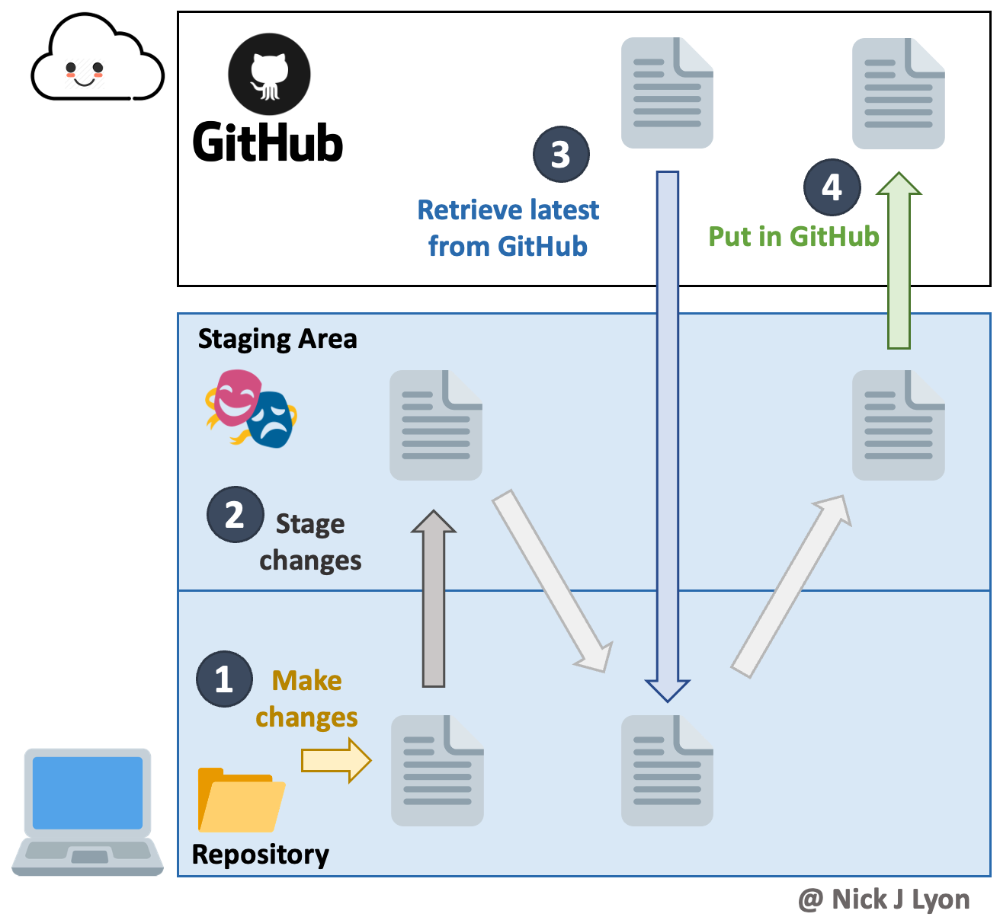
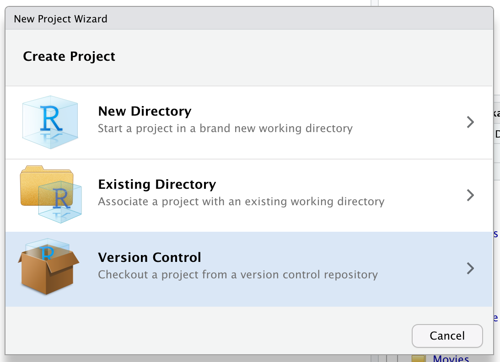
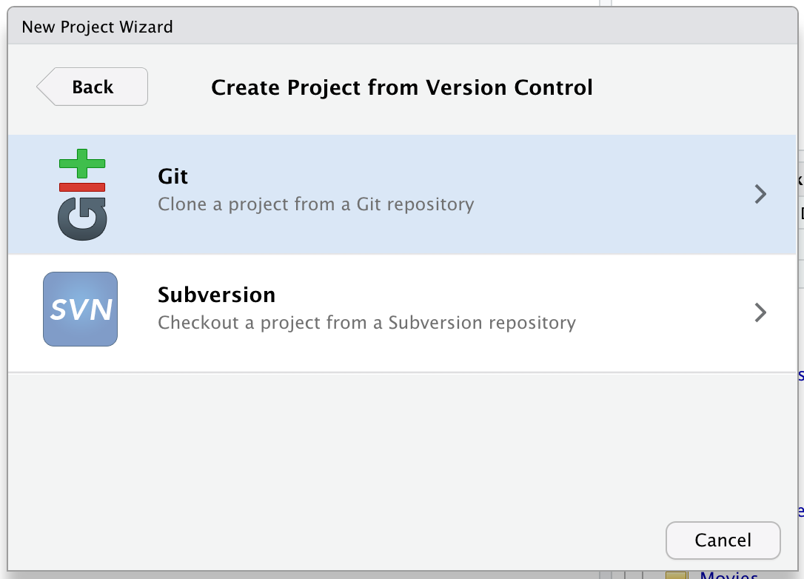
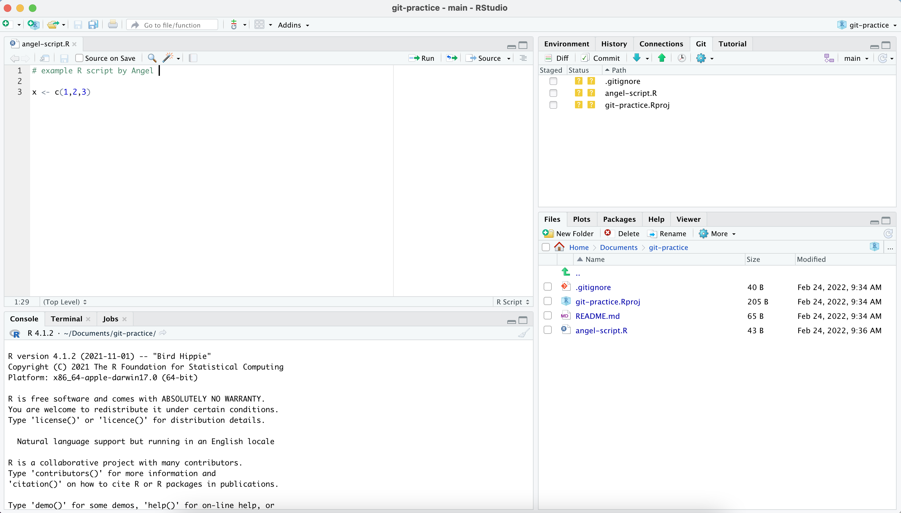
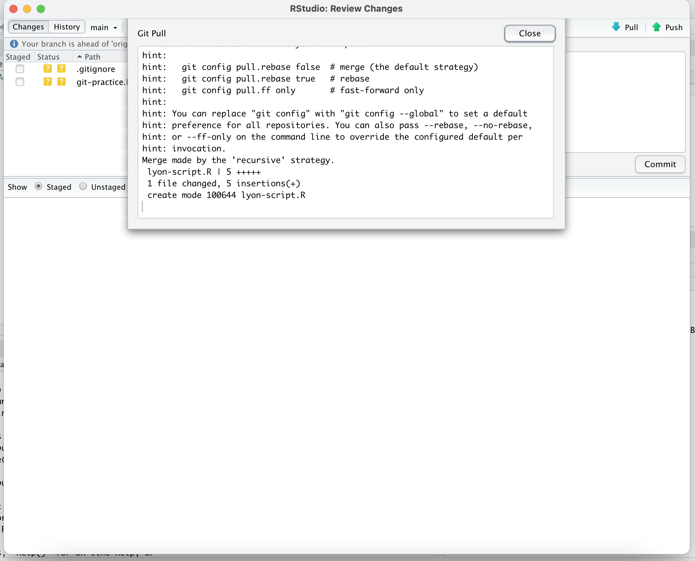
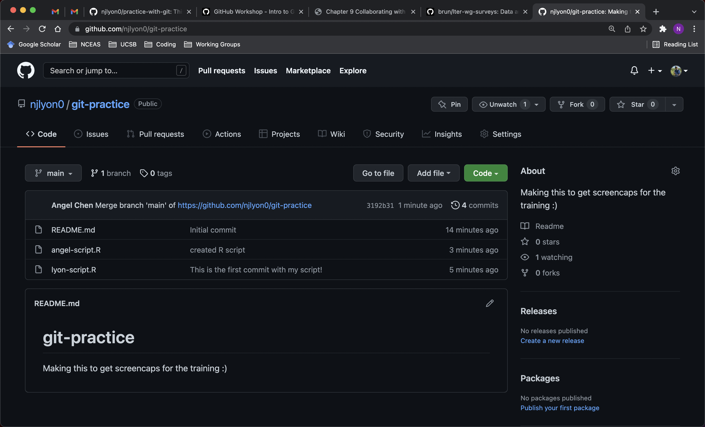

RStudio
Brief Overview of git Workflow

Before we get into using git and GitHub through RStudio, it will be helpful to review the major steps of including version control as you work on code.
Beginning on your local computer, you make changes to a file in a folder that you have previously marked for version control tracking (i.e., a working directory). Once those changes are made you can stage changes within your local computer. After staging you can shift the revised file to the cloud where any GitHub users with access to your project can access the most recent file and look at the history of all previous changes. Finally, you (or your collaborators) can retrieve the latest file versions from the cloud.

git Vocabulary
Finally, it will be helpful to introduce four key pieces of vocabulary before we dive into the interactive component of this workshop.
Clone = copy the entire contents of a GitHub repository to your local computer (done once per computer)
Commit = move a changed local file to your local staging area (step 2 of the above diagram)
Pull = get file(s) from the cloud to your local computer – opposite of a “push” (step 3)
Push = move file(s) to the cloud from your local computer – opposite of a “pull” (step 4)

Cloning a Repository
Now, the first step in using git with RStudio is cloning the repository from GitHub. Note for clarity that in the screenshots below, GitHub is in dark mode while RStudio is in light mode. To clone a repository, follow these steps:
- Navigate to the repository on GitHub and click on Code. Select HTTPS and copy the link.

- Open up RStudio.

- Go to the Project tab on the top right corner and click New Project…

- Select Version Control.

- Select
git.

- Paste the repository URL that you just copied. Choose a file path to save your project to.

Now we have finished cloning the repository to our RStudio! Notice that we are working in our git-practice project and that our README.md file shows up under the list of files, just like in our GitHub repository.

git Workflow Overview Reminder
The typical workflow with git goes like this:
Step 1: You modify files in your working directory and save them as usual.
Step 2: You stage files to mark your intention to “commit” them (in RStudio this is done by checking the box next to the file in the “Git” tab).
Step 3: You commit the staged files, which permanently stores them as snapshots to your git directory.
We can make an analogy with taking a family picture, where each family member would represent a file.
- Staging files is like deciding which family member(s) are going to be on your next picture
- Committing is like taking the picture
This 2-step process enables you to flexibly group files into a specific commit. Those groupings can be helpful to you later if you’re trying to find what you changed for a specific task (because those changes likely are all in the same commit)
Here is the infographic from the start of this chapter again, which shows the same workflow:
Creating a New File
Let’s try out a simple git workflow by first creating a new file. This is Step 1 of the process. We can add new R scripts and files to our repository through RStudio. Try creating a new script by going to File > New File > R Script. Feel free to type anything you want into this script as an example. Name this script after yourself. In the screenshot below, I have named my script angel-script.R.
Once you are done, navigate to the git tab on the upper left corner. You should see your new script show up there along with a .gitignore and git-practice.Rproj file. Do not worry about the .gitignore file for now, it was created by RStudio to make sure that some temporary files are not tracked by git. The git-practice.Rproj file will save your settings and open tabs when you close the project, and will restore these settings the next time you open it.
 Notice that there are color-coded icons next to the files in the “Git” tab. These icons are shorthand for the status–according to git–of every* file in your working directory. Not technically “every” file because files that are tracked but haven’t been modified are not included. See below for definitions.
 In our case, it means that our R script,
In our case, it means that our R script, .gitignore, and git-practice.Rproj files have never been tracked by git (since these files were just created). Note also that the README.md file is not listed, but it exists (check the Files pane). It is because files that are tracked but have no modifications since the last commit are not listed.
Adding our Script to the Next Commit
Let us look at the diff of our script. Click on the Diff tab.

Checking our script, we can see the new lines that we just typed are in green, which indicates that these lines have been added for git. We would like to save a snapshot of this version of our script. Since we’ve just done Step 1, here are the rest of the steps we will need to do to get our script to show up on our GitHub repository:
Step 2: Add the file to the next commit by checking the box in front of the file name. Note that the two ? icons will change to a single A on the left to show you that this file is now staged to be part of the next commit.
Step 3: In the right pane, type a short but descriptive commit message detailing what you have done so far. Then click on the Commit button to save this version of the script in the git database.
 If you did all the steps correctly, you should see something like this:
If you did all the steps correctly, you should see something like this:
 Notice that
Notice that git tells us that 1 file changed because we’ve just added a new file to our commit. Now close the window. Before sending our changes back to GitHub, we should make sure that the copy of the repository on RStudio is completely up-to-date with the one on GitHub to avoid any conflicts.
Getting the Latest Updates
There are two git commands to exchange between a local and remote versions of a repository:
pull:gitwill get the latest remote version and try to merge it with your local versionpush:gitwill send your local version to the remote version of the repository (in our case GitHub)
Before sending your local version to the remote, you should always get the latest remote version first. In other words, you should pull first and push second. This is the way git protects the remote version against incompatibilities with the local version. You always deal with potential problems on your local machine. Therefore your sequence will always be:
- Commit
pullpush
Of course RStudio has icons for that on top of the “Git” tab, with the blue arrow down being for pull and the green arrow up being for push. Remember the icons are organized in sequence!
Let us do the pull and push to synchronized the remote repositories. Click on the Pull button to pull changes (if any) from the GitHub repository to the copy on RStudio. We have now synchronized the local (our computer) and remote (on GitHub) versions of our repository. You may have noticed that all of our preceding graphics use blue for pull-related content and green for push-related information. Hopefully that helps cement the two ideas in your mind!

In my case, it turns out that a new script, lyon-script, was added to the GitHub repository by a collaborator while I was making my own script. Since I have just pulled, lyon-script now shows up in my RStudio files.
  A new message has popped up for me: “Your branch is ahead of ‘origin/main’ by two commits”. This means that I have two additional commits on my local machine that I never shared back to the remote repository on GitHub. If I look at the content of my repository on GitHub, I will see just the
A new message has popped up for me: “Your branch is ahead of ‘origin/main’ by two commits”. This means that I have two additional commits on my local machine that I never shared back to the remote repository on GitHub. If I look at the content of my repository on GitHub, I will see just the README.md and lyon-script. My changes are NOT in the cloud yet. You might be seeing a similar message as well.
Sending Changes back to GitHub
So how do we send our changes back to GitHub? Locate the Push button on the “Git” tab and click on it. Now your script should show up in the GitHub repository!
 Navigate back to the GitHub website and find your repository. Check to see if your script has been added correctly. In my case,
Navigate back to the GitHub website and find your repository. Check to see if your script has been added correctly. In my case, angel-script.R finally shows up in my repository.

Rinse and Repeat
Great! Now that your script has been added to the group repository, you should try to repeat the same workflow over again just to get a feel for how it works. Go back to RStudio and edit your own script. Save those edits, add your edited file to the staging area, write a commit message, then commit your changes. After committing, make sure to pull first then push after! When you pull, you might notice that scripts from your group members/collaborators will show up in your RStudio files.
Make sure to work on your own script. If you and another group member work on the same script at the same time, this may lead to merge conflicts with git. If two people were to work on the same script, they may be making different edits on the same lines, and git would not know which edits to keep. To avoid merge conflicts, be mindful of what files you are working on and always communicate this to your group members!